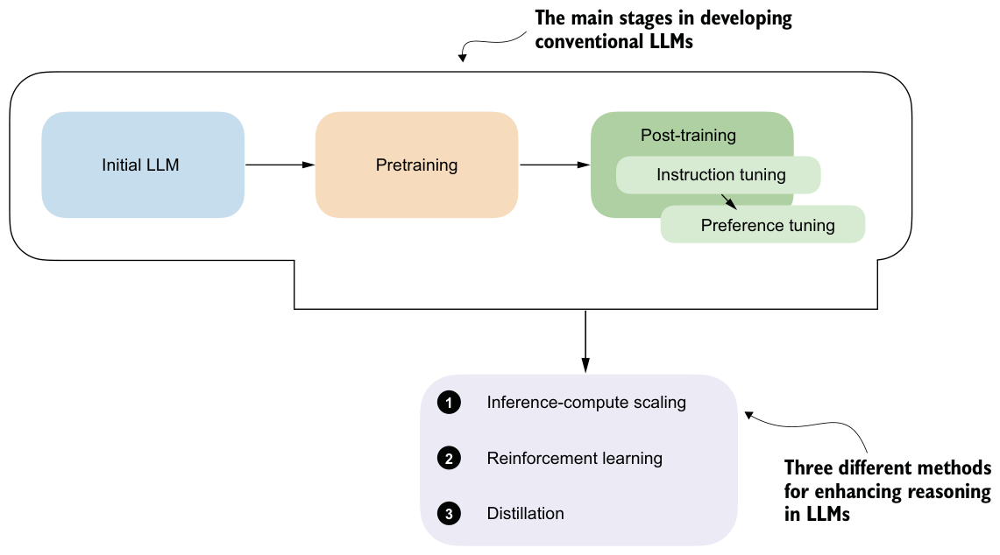

1.3Improving LLM reasoning with training and inference techniques
Reasoning, in the context of LLMs, entered the public eye with the announcement of OpenAI’s o1 in ChatGPT on September 12, 2024. In the announcement article, OpenAI stated, “We’ve developed a new series of AI models designed to spend more time thinking before they respond” (https://openai.com/index/introducing-openai-o1-preview/). Furthermore, OpenAI wrote, “These enhanced reasoning capabilities may be particularly useful if you’re tackling complex problems in science, coding, math, and similar fields.”
A few months later, in January 2025, DeepSeek released the DeepSeek-R1 model and technical report, which details training methods for developing reasoning models (https://arxiv.org/abs/2501.12948). This made big waves because the company not only made freely and openly available a model that competes with and exceeds the performance of the proprietary o1 model but they also shared a blueprint for training such a model. In this book, we’ll look at how the methodologies used to develop reasoning models work by implementing similar methods from scratch.
The different approaches to developing and improving an LLM’s reasoning capabilities can be grouped into three broad categories, as illustrated in figure 1.5. These methods are typically applied to LLMs that have undergone the conventional pretraining and post-training phases, including instruction and preference tuning.

We will examine these common approaches in more detail throughout the book:
- Inference-time compute scaling (also often called inference-compute scaling, test-time scaling, and other variations) includes methods that improve the model’s reasoning capabilities at inference time (when a user prompts the model) without
training or modifying the underlying model weights. The core idea is to trade increased computational resources for improved performance, making even fixed models more capable through techniques such as chain-of-thought reasoning and various sampling procedures. This will be the focus of chapters 4 and 5.
- Reinforcement learning (RL) refers to training methods that improve a model’s reasoning capabilities by encouraging it to take actions that lead to high-reward signals. These rewards can be broad, such as task success or heuristic scores, or they can be narrowly defined and verifiable, such as correct answers in math problems or coding tasks.
Unlike inference-time compute scaling, which can improve reasoning performance without modifying the model, RL updates the model’s weights during training. This enables the model to learn and refine reasoning strategies through trial and error based on the feedback it receives from the environment. We will explore RL in more detail in chapters 6 and 7.
- Distillation involves transferring complex reasoning patterns learned by larger, more capable models into smaller or more efficient models. In the context of LLMs, this typically means performing supervised fine-tuning (SFT) using high-quality labeled instruction datasets generated by a larger, more capable model. This technique is commonly referred to as knowledge distillation or simply distillation in LLM literature. It’s important to note that this differs slightly from traditional knowledge distillation in deep learning, where a smaller (“student”) model typically learns from both the outputs and the logits produced by a larger (“teacher”) model. This topic is discussed further in chapter 8.